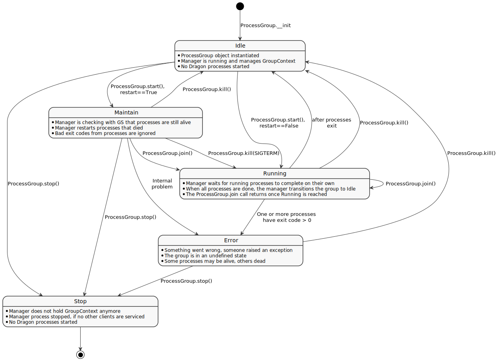

dragon.native.process_group
The Dragon native class for managing the life-cycle of a group of Dragon processes.
The intent is for the class to be agnostic about what the processes are doing, it only maintains their lifecycle.
This file implements a client API class and a Manager process handling all groups on the node. The manager holds a list of GroupContext classes and gets signals from the client classes using a queue. The group of processes undergoes state transitions depending on the signals the client send to the manager.
Due to transparency constraints the manager cannot send information back to the client. Instead we are using shared state
The underlying state machine looks like this:
{kind=link}
Classes
This class declares methods that all concrete State classes should implement and also provides a backreference to the Context object, associated with the State. |
|
This is the fallback state if an issue with the group occurs. |
|
The Context defines the group interface for the manager and the client. |
|
This state kills existing processes and does nothing otherwise. |
|
This state starts missing processes and restarts processes that are not alive anymore. |
|
|
|
An enumeration. |
|
Robustly manage the lifecycle of a group of Dragon processes using Dragon Global Services. |
|
Stops all processes of the group and removes the group from the Manager. |
Exceptions
Exception raised by the Dragon Pool Workers implementation |
|
Exceptions raised by the Dragon Pool Workers implementation |
- exception DragonProcessGroupError
Exceptions raised by the Dragon Pool Workers implementation
- exception DragonProcessGroupAbnormalExit
Exception raised by the Dragon Pool Workers implementation
- class PGSignals
An enumeration.
- class BaseState
This class declares methods that all concrete State classes should implement and also provides a backreference to the Context object, associated with the State. This backreference can be used by States to transition the Context to another State. It also defines common methods and data structures to all states.
- property context
Link back to it’s own context.
- Returns
The group context holding this state
- Return type
- class Error
This is the fallback state if an issue with the group occurs. The state of the processes is undefined here.
- class Idle
This state kills existing processes and does nothing otherwise.
- class Maintain
This state starts missing processes and restarts processes that are not alive anymore.
- Raises
DragonProcessGroupError – If one of the processes could not be (re)started.
- class Running
- class Stop
Stops all processes of the group and removes the group from the Manager. The group cannot be restarted anymore.
- class GroupContext
The Context defines the group interface for the manager and the client. In particular, it handles signals and state changes. It maintains a reference to an instance of a State subclass, which represents the current state of the group of processes.
- __init__(templates: list[tuple], nproc: int, restart: bool, ignore_error_on_exit: bool, pmi_enabled: bool, walltime: float, policy: Policy) None
This class represents a group of processes and exposes an interface to the Manager to handle signals and state transitions.
- Parameters
templates (list[tuple(int, dragon.native.process.TemplateProcess),]) – a list of tuples where each tuple contains a replication factor
nand a Dragon TemplateProcess object specifing the properties of the process to start. The processes can hold the same or different attributes in any way and will be numbered in order.nproc (int) – total number of processes that belong to the ProcessGroup
restart (bool) – wether to restart processes that exited prematurely, defaults to True
ignore_error_on_exit (bool) – whether to ignore errors when the group exists, defaults to False
pmi_enabled (bool) – wether to instruct Dragon to enable MPI support, defaults to False
walltime (float) – time in seconds to run processes before killing them.
policy (dragon.infrastructure.policy.Policy) – determines the placement of the group resources
- handle_signal(signal: PGSignals) tuple
This method takes a signal, checks if the signal is allowed, given the current state, and returns the new state. If the walltime is up, it overwrites the signal with kill.
- Parameters
signal (Signal) – The signal to consider
- Returns
target state
- Return type
- Raises
RuntimeError – raised, if the transition is not allowed
- transition_to(new_state: BaseState) BaseState
Transition the context to a new state. This does NOT run the new state or updates the status.
- run(prior_state: BaseState, signal: PGSignals, sig_id: int)
Execute the current (!) state in self._state.
- Parameters
prior_state (BaseState) – prior state
- get_next_sig_id() int
Obtain the next unique signal ID for this group context
- Returns
next signal id
- Return type
int
- property status: str
The current status of the Group.
- Returns
state name
- Return type
str
- property puids: list[int]
The puids maintained by the GroupContext.
- Returns
A list of puids if the process is started or None if not.
- Return type
list[int or None]
- property last_completed_signal: int
Return the ID of the last successfully completed signal.
- Returns
the signal id
- Return type
int
- update_status(compl_sig_id: int)
update the global status of this context.
- Parameters
compl_sig_id (int) – signal just completed. If None, reuse the last value from the queue.
- class ProcessGroup
Robustly manage the lifecycle of a group of Dragon processes using Dragon Global Services.
This is really a state machine of the underlying processes. We should always be able to “ask” the manager process for the state of the group and send it a signal to make a state transition.
- __init__(restart: bool = True, ignore_error_on_exit: bool = False, pmi_enabled: bool = False, walltime: Optional[float] = None, policy: Optional[Policy] = None)
Instantiate a number of Dragon processes.
- Parameters
restart (bool) – if True, restart worker processes that exit unexpectedly and suppress any errors from them, defaults to True.
ignore_error_on_exit (bool) – If to ignore errors coming from processes when they exit from Join state.
flags (Worker.Flags) – optional flags that affect the handling of a worker process.
pmi_enabled (Bool) – Instruct the runtime to setup the environment so that the binary can use MPI for inter-process communication.
walltime (float) – Time in seconds until the processes in the group get killed
policy (dragon.infrastructure.policy.Policy) – determines the placement of the processes
- add_process(nproc: int, template: TemplateProcess) None
Add processes to the ProcessGroup.
- Parameters
template (dragon.native.process.TemplateProcess) – single template processes, i.e. unstarted process objects
nproc (int) – number of Dragon processes to start that follow the provided template
- init() None
Initialize the GroupContext and Manager.
- start() None
Starts up all processes according to the templates. If
restart == False, transition to ‘Running’, otherwise transition to ‘Maintain’.
- join(timeout: Optional[float] = None) None
Wait for all processes to complete and the group to transition to Idle state. If the group status is ‘Maintain’, transition to ‘Running’.
Raises TimeoutError, if the timeout occurred.
- Parameters
timeout (float) – Timeout in seconds, optional defaults to None
- Returns
True if the timeout occured, False otherwise
- Retype
bool
- kill(signal: Signals = Signals.SIGKILL) None
Send a signal to each process of the process group.
The signals SIGKILL and SIGTERM have the following side effects:
If the signal is SIGKILL, the group will transition to ‘Idle’. It can then be reused.
If the group status is ‘Maintain’, SIGTERM will transition it to ‘Running’.
If the group status is ‘Error’, SIGTERM will raise a
DragonProcessGroupError.
- Parameters
signal (signal.Signals, optional) – the signal to send, defaults to signal.SIGKILL
- stop() None
Forcibly terminate all workers by sending
SIGKILLfrom any state, transition toStop. This also removes the group from the manager process and marks the end of the group life-cycle.
- property puids: list[int]
Return the puids of the processes contained in this group.
- Returns
a list of puids
- Return type
list[int or None]
- property status: str
Get the current status of the process group handled by this instance.
- Returns
current status of the group
- Return type
str